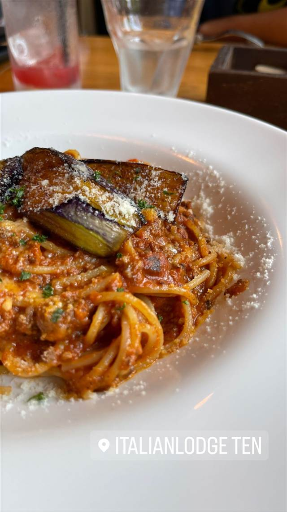

エスニック・各国料理 · ハワイ · たまプラーザ
メレンゲ たまプラーザ店（Merengue）
メレンゲ使用のふわふわパンケーキとロコモコが名物のハワイアン
MERENGUE
たまプラーザ駅から徒歩5分のハワイアンカフェ＆レストラン。メレンゲを使ったふわふわパンケーキやロコモコ、ガーリックシュリンプなど、南国ムードの音楽とともに本格的なハワイ料理が楽しめる。
REVIEWS
世間の評判
3.26食べログ
ふわふわパンケーキと開放的な空間
- ふわふわで軽い食感のパンケーキを評価する声が多い
- 天井が高くハワイのような開放的な雰囲気を評価する人が多い
- ランチ時は混雑が激しく待ち時間が長いという声がある
- 値段がやや高めだと感じる人もいる
食べログ 口コミ311件
| 看板 | メレンゲ風ふわふわパンケーキ、ロコモコ、ガーリックシュリンプ |
|---|---|
| こだわり | メレンゲ（卵白泡立て）を使ったふわふわのパンケーキが看板 |
| どこから | 東京から1時間ほど |
| 営業時間 | 月〜木 08:00-21:00 金・土 08:00-21:30 日 08:00-21:00 |
| 予算 | 昼 ¥1,000～¥1,999 夜 ¥1,000～¥1,999 |
| 定休日 | 無休 |
| 予約 | 予約可 |
| 場所 | たまプラーザ 神奈川県横浜市青葉区美しが丘 |
| メモ | たまプラーザ駅から徒歩5分 |
食べたもの：ハワイアン料理
OFFICIAL
店からの知らせ
その日の限定や臨時の休みは、店のInstagramに出ます。
NEARBY
近い店・同じ系統の店
-

パスタ たまプラーザ ItalianLodge TEN（イタリアンロッジ テン） 山小屋風の隠れ家で味わう揚げナスのせ自家製ミートソースパスタ 昼 ¥1,000～¥1,999 夜 ¥4,000～¥4,999 -
 ハワイ 牧志駅
ハワイアンフルーツカフェ -the Sea-
久米島の海洋深層水を極薄の氷に削り海を食べるかき氷に仕立てる
昼 ¥1,000～¥1,999 夜 ¥1,000～¥1,999
ハワイ 牧志駅
ハワイアンフルーツカフェ -the Sea-
久米島の海洋深層水を極薄の氷に削り海を食べるかき氷に仕立てる
昼 ¥1,000～¥1,999 夜 ¥1,000～¥1,999
-
 ハワイ 六本木駅
POKEDO MARKET（ポケドゥマーケット）
具材を自由に選べる本場ハワイ仕込みのカスタムポケ丼
昼 ¥2,000～¥2,999 夜 ¥3,000～¥3,999
ハワイ 六本木駅
POKEDO MARKET（ポケドゥマーケット）
具材を自由に選べる本場ハワイ仕込みのカスタムポケ丼
昼 ¥2,000～¥2,999 夜 ¥3,000～¥3,999
-
 ハワイ 美浜
808 Poke Bowls Okinawa 北谷店 & Hammerhead Shark Grill 808
ハワイの市外局番にちなむ名の生姜蜂蜜味噌ダレのポケ丼
昼 ¥1,000～¥1,999 夜 ¥1,000～¥1,999
ハワイ 美浜
808 Poke Bowls Okinawa 北谷店 & Hammerhead Shark Grill 808
ハワイの市外局番にちなむ名の生姜蜂蜜味噌ダレのポケ丼
昼 ¥1,000～¥1,999 夜 ¥1,000～¥1,999
-
 ハワイ Kahuku
Giovanni's Original Shrimp Truck (Kahuku店)
カフクスタイルのガーリックシュリンプを広めた元祖の屋台
ハワイ Kahuku
Giovanni's Original Shrimp Truck (Kahuku店)
カフクスタイルのガーリックシュリンプを広めた元祖の屋台
-
 ハワイ カパフル
Rainbow Drive-In (Kapahulu)
ヒロの老舗「Cafe 100」直伝レシピのロコモコ
ハワイ カパフル
Rainbow Drive-In (Kapahulu)
ヒロの老舗「Cafe 100」直伝レシピのロコモコ